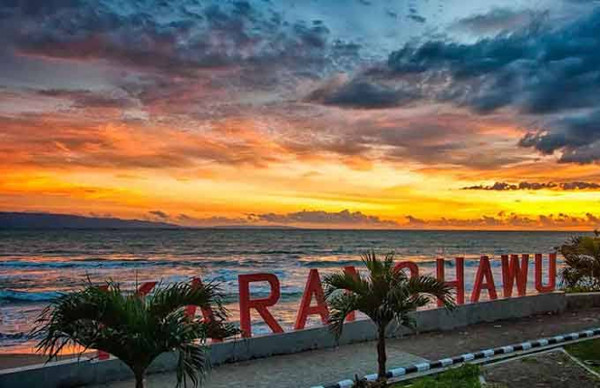
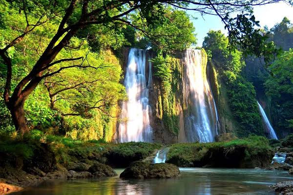

Wisata
Pantai Palabuhanratu atau lebih populer sebagai Pantai Pelabuhan Ratu, adalah sebuah tempat wisata di pesisir Samudra Hindia di selatan Jawa Barat. Lokasinya terletak sekitar 60 km ke arah selatan dari Kota Sukabumi. Pantai ini dikenal memiliki ombak yang sangat kuat dan karena itu berbahaya bagi perenang pantai. Topografinya berupa perpaduan antara pantai yang curam dan landai, tebing karang terjal, hempasan ombak, dan hutan cagar alam.
Pantai Karanghawu
Pantai Karanghawu, yang letaknya sekitar 20 km dari pusat Kota Palabuhanratu, merupakan pantai karang yang menjorok ke laut dan berlubang di beberapa bagian itu. Bentuk karangnya lebih mirip tungku, dalam bahasa Sunda disebut “Hawu”
Geopark Ciletuh
Kawasan Geopark CIletuh Palabuhan Ratu memiliki luas 126.100 ha. Tidak heran jika di kawasan ini terdapat banyak curug atau air terjun yang bisa dikunjungi. Setidaknya terdapat 8 curug yang bisa dikunjungi.Curug Luhur (curug Cigangsa) berada di ketinggian tebing lebih dari 100 m. keistimewaannya, pengunjung bisa melihat pemandangan pelangi yang muncul di bawah curug. Curug Puncakjeruk Ada di aliran Sungai Ciletuh, Mekarjaya. Air terjun ini sangat lebar dan memiliki 2 tingkat, atas dan bawah. Curug Cikaret berada di aliran Sungai Cikaret, Mekarjaya. Termasuk salah satu curug yang tersembunyi. Curug Puncakmanik Curug ini berada di aliran sungai Ciletuh yang membatasi desa Tamanjaya dan C|ibenda. Curug ini letakknya hanya 600 meter dari curug tengah. Curug Tengah berjarak kurang lebih 200 m dari Curug Awang da nada di aliran sungai CIletuh. Pengunjung bisa berenang di danau kecil di Curug Tengah. Curug Awang berada di aliran sungai CIletuh, Tamanjaya. Air terjun ini memiliki lebar 60 meter dan ketinggian sekitar 40 meter. Ciri khas curug ini adalah dinding batu alam berwarna coklat kemerahan. Curug Cikanteh Berada di Desa Ciwaru. Perlu menyusuri bebatuan dan menyeberangi sungai agar dapat sampai ke Curug Cikanteh. Curug Sodong berada di desa Ciwaru dan air terjun yang paling mudah dijangkau. Disebuut juga dengan curug Penganten atau Curug Kembar. Curug Cimarinjung berada di Desa Ciemas dan dekat dengan tepi pantai Palangpang. Air terjunnya bisa langsung terlihat dari pintu masuk kawasan Geopark Ciletuh.